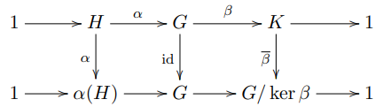
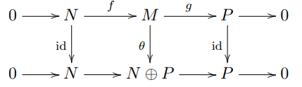

Just to get it out of the way, If \(\operatorname{rank}(A) < \operatorname{rank}(A|B)\), then the system is inconsistent.
Let Let \(A\) denote a matrix and \(A | B \) denote its augmented matrix.
Consistent Systems:
Inconsistent System:
Proofs
To see this note that rank of the matrix is dimension of the span of columns of the matrix. Now if \(Ax=b\) has solution, then it means that some linear combination of columns of A gives us b, which implies that \(b\) lies in \(span(A)\) and so \(rank(A|b)=rank(A)\). You can argue similarly in the reverse direction.
A matrix \(A\in\mathcal{M}_{nm}(\Bbb{R})\) \([\) of dimensions \(n \ \text{rows} \times m \ \text{columns} \ \) respectively\(]\) is a representation of a linear transformation \(f\colon\Bbb{R}^m\rightarrow \Bbb{R}^n\), so the image of \(f\) is a subspace of \(\Bbb{R}^n\). Hence, \(\operatorname{rank}(f)=\dim(\operatorname{Im}(f))\leq n\),
But also, by the Rank-Nullity Theorem \((*)\), we have \(\operatorname{rank}(f)\leq m\). Hence, we find the desired result \(\operatorname{rank}(f)\leq \min(m,n)\).
Now, recall the Rank-Nullity Theorem \((*)\)
Def 4a Transforms
Let \(T: V \rightarrow W\) be a linear transformation between two vector spaces where \(T\)'s domain \(V\) is finite dimensional. Then
\(\operatorname{rank}(T) + \operatorname{nullity}(T) = \operatorname{dim}(V)\),
where \(\operatorname{rank}(T)\) is the rank of \(T\) (the dimension of its image) and \(\operatorname{nullity}(T)\) is the nullity of \(T\) (the dimension of its kernel). In other words,
\(\operatorname{dim}(\operatorname{Im}(T)) + \operatorname{dim}(\operatorname{Ker}(T)) = \operatorname{dim}(\operatorname{Domain}(T))\).
This theorem can be refined via the Splitting Lemma \((**)\) \([\) a category-theoretic generalization of this theorem from dimensions to spaces \(]\) to be a statement about an isomorphism of spaces, not just dimensions. Explicitly, since \(T\) induces an isomorphism from \(V/\operatorname{Ker}(T)\) to \(\operatorname{Im}(T)\), the existence of a basis for \(V\) that extends any given basis of \(\operatorname{Ker}(T)\) implies, via the splitting lemma, that \(\operatorname{Im}(T) \oplus \operatorname{Ker}(T) \cong V\). Taking dimensions, the rank–nullity theorem follows.
Def 4b Matrices
Linear maps can be represented with matrices. More precisely, an \(m \times n\) matrix \(M\) represents a linear map \(f: \mathbb{F}^n \rightarrow \mathbb{F}^m\), where \(\mathbb{F}\) is the underlying field. So, the dimension of the domain of \(f\) is \(n\), the number of columns of \(M\), and the rank–nullity theorem for an \(m \times n\) matrix \(M\) is
\(\operatorname{rank}(M) + \operatorname{nullity}(M) = n\).
\((**)\) Splitting Lemma
Perhaps the treatments of the splitting lemma that are closest to linear algebra and matrices are those involving groups or modules
Splitting Lemma for Groups: Let \( G \) be a group and \( H \) a subgroup of \( G \). If there exists a homomorphism \( \varphi : G \rightarrow H \) such that \( \varphi \) is the identity on \( H \), then \( G \) is the internal direct product of \( H \) and \( \ker(\varphi) \). This means that if there exists a homomorphism \( \varphi \) from a group \( G \) to a subgroup \( H \) such that \( \varphi \) is the identity on \( H \), then \( G \) can be expressed as the direct product of \( H \) and the kernel of \( \varphi \). This gives a decomposition of the group \( G \) into two subgroups.
More precisely from Prof. Conrad:
A sequence of groups and group homomorphisms
\(H \xrightarrow{\alpha} G \xrightarrow{\beta} K\)
is called exact at \(G\) if \(\operatorname{im}(\alpha) = \operatorname{ker}(\beta)\). This means two things: the image of \(\alpha\) is killed by \(\beta\) (\(\beta(\alpha(h)) = 1\) for all \(h \in H\)), so \(\operatorname{im}(\alpha) \subseteq \operatorname{ker}(\beta)\), and also only the image of \(\alpha\) is killed by \(\beta\) (if \(\beta(g) = 1\) then \(g = \alpha(h)\) for some \(h\)), so \(\operatorname{ker}(\beta) \subseteq \operatorname{im}(\alpha)\). For example, to say \(1 \rightarrow G \xrightarrow{f} K\) is exact at \(G\) means \(f\) is injective, and to say \(H \xrightarrow{f} G \rightarrow 1\) is exact at \(G\) means \(f\) is surjective. There is no need to label the homomorphisms coming out of \(1\) or going to \(1\) since there is only one possible choice. If the group operations are written additively, we may use \(0\) in place of \(1\) for the trivial group.
A short exact sequence of groups is a sequence of groups and group homomorphisms
\(1 \rightarrow H \xrightarrow{\alpha} G \xrightarrow{\beta} K \rightarrow 1\)
which is exact at \(H\), \(G\), and \(K\). That means \(\alpha\) is injective, \(\beta\) is surjective, and \(\operatorname{im}(\alpha) = \operatorname{ker}(\beta)\).
A more general exact sequence can have lots of terms:
\(G_1 \xrightarrow{\alpha_1} G_2 \xrightarrow{\alpha_2} \ldots \xrightarrow{\alpha_{n-1}} G_n\),
and it must be exact at each \(G_i\) for \(1 < i < n\). Exact sequences can also be of infinite length in one or both directions. We will only deal with short exact sequences here.
Exact sequences first arose in algebraic topology, and the later development of homological algebra (the type of algebra underlying algebraic topology) spread exact sequences into the rest of mathematics.
Theorem 3.2. Let \(1 \rightarrow H \xrightarrow{\alpha} G \xrightarrow{\beta} K \rightarrow 1\) be a short exact sequence of groups. The following are equivalent:
(1) There is a homomorphism \(\alpha_0: G \rightarrow H\) such that \(\alpha_0(\alpha(h)) = h\) for all \(h \in H\).
(2) There is an isomorphism \(\theta: G \rightarrow H \times K\) such that the diagram

commutes, where the bottom row is the short exact sequence for a direct product.
The commutative diagram in (2) says that \(\theta\) identifies \(\alpha\) with the embedding \(H \rightarrow H \times K\) and \(\beta\) with the projection \(H \times K \rightarrow K\). So the point of (2) is not simply that \(G\) is isomorphic to \(H \times K\), but it is in a way that turns \(\alpha\) and \(\beta\) into the standard maps from \(H\) to \(H \times K\) and from \(H \times K\) to \(K\).
The key point of (1) is that \(\alpha_0\) is a homomorphism. Merely from \(\alpha\) being injective, there is a function \(\alpha_0: G \rightarrow H\) such that \(\alpha_0(\alpha(h)) = h\) for all \(h\), for instance the function \(\alpha_0(g) = \{ \mathbf{1} \iff g \notin \alpha(H) \land h \iff g = \alpha(h) \} \). But this \(\alpha_0\) is almost surely not a homomorphism.
Splitting Lemma for Modules: Let \( R \) be a ring and \( M \) a module over \( R \). If \( M \) is a direct sum of two submodules, say \( M = A \oplus B \), then any submodule \( N \) of \( M \) can be expressed as the direct sum of \( N \cap A \) and \( N \cap B \). This means that if a module \( M \) can be expressed as the direct sum of two submodules \( A \) and \( B \), then any submodule \( N \) of \( M \) can be decomposed as the direct sum of its intersections with \( A \) and \( B \). This provides a way to decompose submodules of a module that is a direct sum.
Again, more precisely from Prof. Conrad:
Let \( R \) be a commutative ring. A sequence of \( R \)-modules and \( R \)-linear maps \( N \xrightarrow{f} M \xrightarrow{g} P \) is called exact at \( M \) if \( \text{im}(f) = \text{ker}(g) \). For example, to say \( 0 \xrightarrow{h} M \) is exact at \( M \) means \( h \) is injective, and to say \( N \xrightarrow{h} M \xrightarrow{0} \) is exact at \( M \) means \( h \) is surjective. The linear maps coming out of \( 0 \) or going to \( 0 \) are unique, so there is no need to label them.
A short exact sequence of \( R \)-modules is a sequence of \( R \)-modules and \( R \)-linear maps \[ 0 \xrightarrow{f} N \xrightarrow{g} M \xrightarrow{h} P \xrightarrow{} 0 \] which is exact at \( N \), \( M \), and \( P \). That means \( f \) is injective, \( g \) is surjective, and \( \text{im}(f) = \text{ker}(g) \).
[...]
Theorem 2.1. Let \(0 \rightarrow N \xrightarrow{f} M \xrightarrow{g} P \rightarrow 0\) be a short exact sequence of \(R\)-modules.
The following are equivalent:
- There is an \(R\)-linear map \(f_0: M \rightarrow N\) such that \(f_0(f(n)) = n\) for all \(n \in N\).
- There is an \(R\)-linear map \(g_0: P \rightarrow M\) such that \(g(g_0(p)) = p\) for all \(p \in P\).
- The short exact sequence splits: there is an isomorphism \(\theta: M \rightarrow N \oplus P\) such that the diagram below commutes.

If we replace \(R\)-modules with groups and \(R\)-linear maps with group homomorphisms, conditions (1) and (2) are not equivalent: for a short exact sequence \(1 \rightarrow H \xrightarrow{f} G \xrightarrow{g} K \rightarrow 1\), (1) corresponds to \(G\) being a direct product of \(H\) and \(K\) while (2) corresponds to \(G\) being a semidirect product of \(H\) and \(K\). The reason (1) and (2) are no longer equivalent for groups is related to noncommutativity. For an exact sequence of abelian groups, (1) and (2) are equivalent (this is the special case \(R = \mathbb{Z}\), since abelian groups are \(\mathbb{Z}\)-modules).
More on the Splitting Lemma for . . . Modules and Groups from the lovely Prof. K. Conrad
Now, as for linear algebra, Wikipedia also uses the language of the Splitting Lemma for vector spaces:
The theorem can also be phrased as saying that each short exact sequence of vector spaces splits. Explicitly, given that
\[0 \rightarrow U \rightarrow V \overset{T}{\rightarrow} R \rightarrow 0\]
is a short exact sequence of vector spaces, then
\[U \oplus R \cong V\]
hence
\[\dim(U) + \dim(R) = \dim(V).\]
Here \(R\) plays the role of \(\operatorname{Im} T\) and \(U\) is \(\operatorname{Ker} T\), i.e.
\[0 \rightarrow \operatorname{ker} T \hookrightarrow V \overset{T}{\rightarrow} \operatorname{im} T \rightarrow 0\]
In the finite-dimensional case, this formulation is susceptible to a generalization: if
\[0 \rightarrow V_1 \rightarrow V_2 \rightarrow \cdots V_r \rightarrow 0\]
is an exact sequence of finite-dimensional vector spaces, then
\[\sum_{i=1}^{r} (-1)^{i} \dim(V_i) = 0.\]
This follows the reasoning that
Let \(f_0\) be the first map in the sequence, \(f_i\) be the map from \(V_i\) to \(V_{i+1}\), etc.
By the Rank Nullity theorem, we have \(\dim V_i = \dim\ker f_i + \dim \operatorname{im} f_i.\) Thus the left-hand side is
\[\sum_{i=1}^{r} (-1)^i \dim\ker f_i+\sum_{i=1}^{r} (-1)^i \dim\operatorname{im} f_i.\]
Now, by the defining property of an exact sequence, \(\operatorname{im} f_i = \ker f_{i+1}.\) Place that information into one of the sums, and the two sums then cancel out.
Note that in order for the series in question to converge, the sequence must be of the form in this answer, perhaps with extra \(0\)'s.
Now, we have a problem.
And, what in the world are these dotted lines? It appears to be addition for \(\operatorname{dim} V\) but then \(\operatorname{dim} \operatorname{ker} T\) and \(\operatorname{dim} \operatorname{im} T\) don't make sense?
Well, I admittedly asked twitter, where @linguanumerate and @xl772 clarified.
It's just a kind of intuitive picture. The vertical line on the left is a "picture" of \(V\), with its dimension represented by the height of the line. The arrows show \(V\) getting mapped into \(W\), with \(V/\operatorname{ker} T\) getting mapped to \(\operatorname{im} T\) and \(\operatorname{ker} T\) getting squashed to 0.
And I think the dotted lines are just to show which height corresponds to which quantity, I don’t think it’s adding.
But, I think that is enough about rank for now.